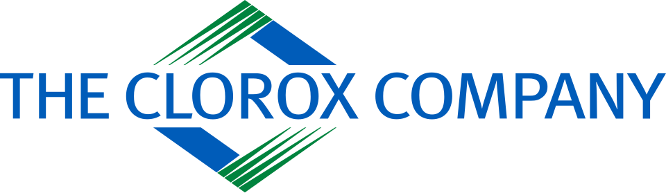

크로락스 Clorox
크로락스(Clorox)는 미국의 생활용품·식품 제조 업체이자, 회사명과 같은 이름으로 판매되는 차아 염소산 나트륨 수용액 기반의 살균·표백제 상표이다.
최종 업데이트

크로락스는 어떤 브랜드인가
이 회사는 다양한 생활용품과 식품, 화학 제품을 제조한다. 대표 제품은 회사명과 같은 이름의 살균·표백제로, 차아 염소산 나트륨의 진한 수용액을 기반으로 한다.
해당 제품은 살균과 소독 또는 표백에 사용하며, 미국에서는 상표명이 일반적으로 표백제를 뜻하는 말로 통한다. 대한민국에서는 유한양행과의 합작사인 유한크로락스를 통해 유한락스라는 상표명으로 생산한다.
국내에서는 표백제보다 살균소독제로 널리 알려졌으며, 락스라는 이름 자체가 살균소독제를 가리키는 말로 통한다.
크로락스는 어떻게 시작되고 성장했나
이 회사는 1913년 미국에서 설립했으며 본사는 캘리포니아주 오클랜드의 Clorox Building에 위치한다. 이후 생활용품과 식품을 비롯해 다양한 화학 제품을 제조하는 사업을 전개했으며, 동명 살균·표백제는 미국에서 표백제를 가리키는 일반적 명칭으로 통할 만큼 알려졌다.
대한민국에서는 유한양행과의 합작사인 유한크로락스를 통해 유한락스라는 상표명으로 생산했다. 해당 제품은 초기에는 상처 부위를 소독하기 위한 가정 상비약으로도 사용했으며, 이후 살균소독제를 가리키는 명칭으로 널리 통용됐다.
크로락스의 브랜드 아이덴티티는 무엇인가
회사명과 같은 살균·표백제 상표가 미국에서는 표백제, 대한민국에서는 락스라는 살균소독제의 일반적 명칭으로 통용된다는 점이 특징이다.
크로락스의 대표 제품과 서비스는 무엇인가
동명 제품은 차아 염소산 나트륨의 진한 수용액을 나타내는 상표 제품으로, 살균과 소독 또는 표백에 사용한다. 주성분은 차아 염소산 나트륨과 소량의 수산화 나트륨이며, 제품에 따라 계면활성제를 포함하기도 한다.
대한민국 식품위생법에서는 이를 식품첨가물로 분류해 야채, 과일, 생선 등의 세척과 탈취에 사용할 수 있도록 한다. 산소계 표백제나 산성 세제와의 혼합은 금지하며, 특히 염산을 함유한 산성 세제와 반응하면 열과 함께 유독한 염소기체가 발생한다.
크로락스는 지금 어떤 상태인가
본사는 캘리포니아주 오클랜드의 Clorox Building에 위치하며, 생활용품과 식품 및 화학 제품을 제조한다. 미국에서는 동명 제품이 대표적인 표백제 상표로 자리하며 상표명 자체가 표백제를 뜻하는 말로 통한다.
대한민국에서는 유한양행과의 합작사인 유한크로락스가 유한락스라는 상표명으로 생산하며, 살균소독제로 널리 알려져 통용된다.
크로락스 로고는 어떻게 변해왔나
자주 묻는 질문
크로락스는 어느 나라 브랜드인가요?
크로락스는 미국의 홈·라이프스타일 브랜드입니다.
크로락스는 언제 설립되었나요?
크로락스는 1913년 설립되었습니다.
크로락스의 브랜드 아이덴티티는 무엇인가요?
회사명과 같은 살균·표백제 상표가 미국에서는 표백제, 대한민국에서는 락스라는 살균소독제의 일반적 명칭으로 통용된다는 점이 특징이다.
크로락스의 대표 제품은 무엇인가요?
동명 제품은 차아 염소산 나트륨의 진한 수용액을 나타내는 상표 제품으로, 살균과 소독 또는 표백에 사용한다.
크로락스의 본사는 어디에 있나요?
본사는 캘리포니아주 오클랜드의 Clorox Building에 위치하며, 생활용품과 식품 및 화학 제품을 제조한다.
크로락스의 공식 웹사이트는 어디인가요?
크로락스의 공식 웹사이트는 http://www.thecloroxcompany.com 입니다.
출처와 검증
크로락스 관련 참고: 공식 웹사이트 · 위키데이터 Q910368 · 한국어 위키백과 · 영어 위키백과. 브랜드명은 한글과 원어를 함께 표기하되 데이터에 없는 표기는 만들지 않습니다. 기원 국가·설립연도는 검수된 정의문에서 확인된 값을 우선하고, 없을 때만 공식 웹사이트 URL이 일치하는 위키데이터 개체의 값을 씁니다. 위키데이터 값은 2026-09-12 기준입니다.